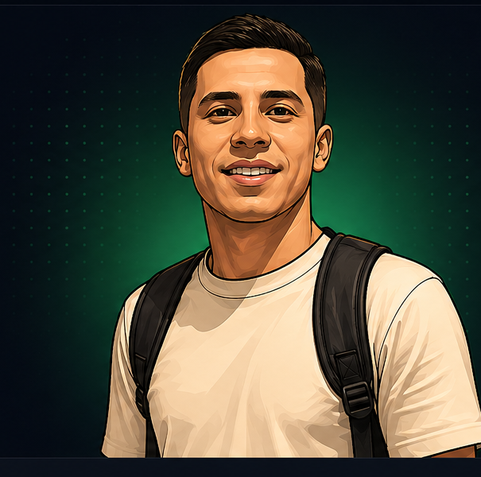

Quem sou
Sou profissional de tecnologia com experiência em análise de sistemas, atendimento técnico, suporte, redes e desenvolvimento de soluções web. Tenho foco em criar sistemas úteis, bonitos e fáceis de usar.
Olá, eu sou
Estudante de programação apaixonado por tecnologia, criação de soluções eficientes e experiências incríveis. Transformo ideias em aplicações modernas, escaláveis e de alta performance. Hoje ainda utilizo da IA para auxilio em projetos, porém estou em fase de estudo para de fato aprender a programar e entender casos complexos.

Projetos
Concluídos
Tecnologias
Dominadas
Repos atualizados
automaticamente
Comprometimento
com Qualidade
Perfil profissional focado em tecnologia, suporte e desenvolvimento.
Sou profissional de tecnologia com experiência em análise de sistemas, atendimento técnico, suporte, redes e desenvolvimento de soluções web. Tenho foco em criar sistemas úteis, bonitos e fáceis de usar.
Atuar com tecnologia, desenvolvimento, suporte, infraestrutura e melhoria de processos, sempre buscando entregar soluções seguras e bem estruturadas.
Consigo unir visão técnica, atendimento ao usuário e prática de negócio para transformar necessidades reais em ferramentas funcionais e profissionais.
Tecnologias e competências que fazem parte da minha jornada.
Meus repositórios são carregados diretamente do GitHub
Minha trajetória une suporte, sistemas e desenvolvimento.
Atuação com atendimento técnico, investigação de problemas, orientação ao cliente e apoio em sistemas.
Criação de aplicações web, painéis administrativos, sistemas de controle, automações e interfaces modernas.
Diagnóstico de conectividade, manutenção de computadores, testes de rede e suporte ao usuário final.
Caso tenham ideias ou métodos de estudo, entrem em contato comigo, aceito muito ajuda para entrar na área de desenvolvimento
Estou aberto a oportunidades, projetos, freelas e parcerias na área de tecnologia.